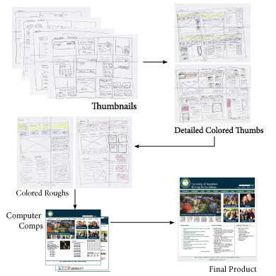
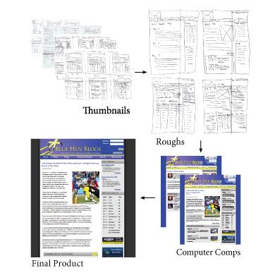
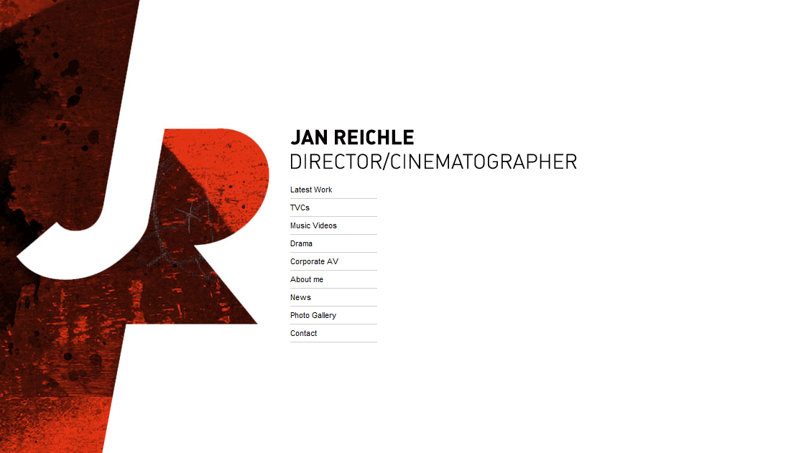
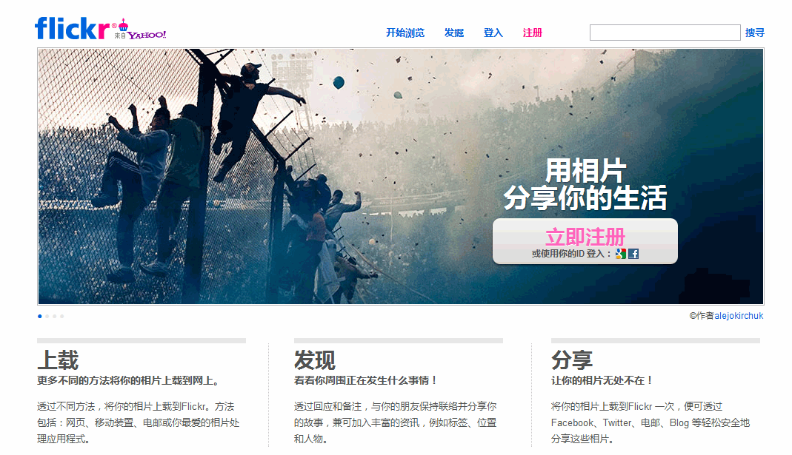

《静态网站设计与制作》课程是网络技术专业的核心课程，旨在培养网页设计与制作能力。
何为网页设计与制作？
- 网页设计：网页美工，指的是从配色、布局、构图等美术层面对网页进行艺术性美化。主要用Photoshop软件绘制。
- 网页制作：综合运用HTML代码技术，对相关的网页元素（文字、图片、表格等）根据一定的版式进行排版。用到HTML，CSS，JavaScript等代码技术，可在Dreamweaver软件中制作。
 |
 |
静态网页与动态网页
静态网页：纯客户端运行、不涉及程序。可通过gif动画和flash动画给静态页面加入动感。
动态网页：asp、php、jsp、.net等网络编程语言编写服务器端代码，生成的Html网页在客户端浏览。动态网页可实现信息交互，操纵数据库。
课程学习进程
- 通过HTML标记的学习，理解网页的构成
- 熟悉和掌握Dreamweaver软件平台上的网页设计方法
- 理解和掌握CSS网页样式设置
- 理解和初步掌握JavaScript在网页中的应用
- 独立构建静态网站，并上传与维护
课程涉及知识领域
- 美学
- 认知心理学
- 图像处理与设计
- 网页制作技术

教学安排
课时安排教学做：48学时
|
学习之道
1. 体验中品鉴
带着问题上网冲浪：
- 互联网中的网页现状和网站分类
- 不同的网站在布局结构、配色方案和互动功能等方面有无共性特点
- 优秀网站的配色、布局设计的思路，以及细节处理方法
2．临摹中感悟
用Photoshop临摹绘制优秀的网页设计作品。 尤其注意：
- 网站上导航条、按钮、区块边线、区块标题栏等的共性和个性处理
- 在临摹绘图中感悟细节，力求精确到像素点
3．创新中积累
大量的临摹长进了设计的基本功。进一步：
- 寻找和发掘网站主题，进行网页的自主创新设计
- 逐渐形成自己的设计特色
- 积累设计素材，如：质感的网页背景、图标、按钮背景、底纹等。
4. 苦练中提升
优秀的网页设计作品，需技术上实现才可发布到互联网和公众见面。

网页欣赏
网页设计之前，我们需要多多的浏览、思考和感悟。
你在浏览一张网页时，不妨作如下设问：
- 页面上的哪些元素你最欣赏？
- 页面上的哪部分令你的目光停留得最久？有理由吗？
- 网页可以删减哪些信息，需要增加哪些信息？为什么？
另一个角度说，网页是一种推销。只有良好的浏览体验才能让合适的人，在你的网页上停留视线。
那么什么是好的网页呢？
- 尽快将主要的信息传递给浏览者；
- 令用户有愉快的浏览体验；
- 网页本身注重细节、制作精良。
好的网页 = 干净整洁的界面设计+舒适高效的用户体验
网页一：极简的网页

远离杂乱又咄咄逼人的网页，让页面变得简约而明晰。
极简的网页将重要的信息带给用户，避免用户在满窗口的信息中迷失，而失去耐心。
网页三：用于相片分享的网页

分享相片，主题鲜明。对应的主页呈现“光影一瞬间”的相片，可操作功能明晰了然。

©2012-2018 Yang Peili. All rights reserved. contact me